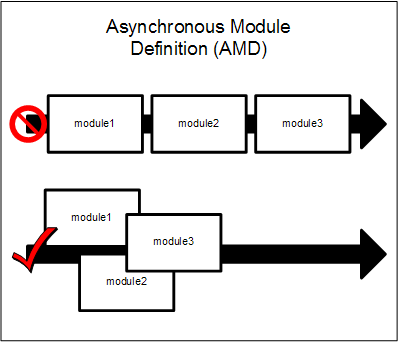

Applied RequireJS
Modular JavaScript for Fancy People
— Jeremy Wagner —
Dependency Management
or
A thing you're already doing (even though you might not know it, yet.)
Loading jQuery with Dependencies
The Olde Tyme Way
<script src="scripts/jquery.min.js"></script>
<script src="scripts/main.js"></script>
AMD
or
Asynchronus Module Definition
asynchronous?
That's baked in, bro!
<script src="scripts/jquery.min.js" async></script>
<script src="scripts/main.js" async></script>
Unforuntately, async...
AMD in a Nutshell:
“Asynchronous module definition (AMD) is a JavaScript specification that defines an API for defining code modules and their dependencies, and loading them asynchronously if desired.”
But What About CommonJS?

CommonJS
Out of the box
- Not designed with the browser in mind (Transport formats have been proposed.)
- Suited for server side operations (e.g., I/O, database interaction.)
- Synchronous by design. (Though proposals exist for asynchronous behavior.)
But it is possible to have our cake...
...and eat it, too!
...But more on that later.
Introducing
Finally...
RequireJS
An AMD style JavaScript module loader optimized for in-browser use.
Folder Structure
-
/webapp_root
- index.html
- scripts/
- app.js
-
lib/
- jquery.js
- require.js
Your Application index.html
The Old Way
<!doctype html>
<html>
<head>
<title>
Applied RequireJS
</title>
<meta name="viewport" content="width=device-width, initial-scale=1" />
<link rel="stylesheet" href="styles/styles.css" type="text/css" />
</head>
<body>
...
<script src="scripts/jquery.js"></script>
<script src="scripts/main.js"></script>
</body>
</html>
Your Application index.html
With RequireJS Included
<!doctype html>
<html>
<head>
<title>
Applied RequireJS
</title>
<meta name="viewport" content="width=device-width, initial-scale=1" />
<link rel="stylesheet" href="styles/styles.css" type="text/css" />
</head>
<body>
...
<script src="scripts/require.js" data-main="scripts/app"></script>
</body>
</html>
That's It!
scripts/app.js
require(["lib/jquery"], function($){
$(function(){
// Application Logic Here
});
});
Adding More Dependencies
require(["lib/jquery"], function($){
$(function(){
// Application Logic Here
});
});
Need Further Abstraction?
Use define() instead of require()
define() vs. require()
- Both take the same arguments in the same order: dependencies, then code.
require()executes encapsulated code immediately.define()stores encapsulated code as a module that is executed by arequire()statement.
scripts/jquery-stuff.js
define(["lib/jquery", "lib/modernizr"], function($, Modernizr){
$(function(){
// Application Logic Here
});
});
scripts/app.js
require(["lib/jquery"], function($){
$(function(){
// Application Logic Here
});
});
On Further Abstraction
- Bucketing dependencies equals more maintainable code.
- Bucketed dependencies are only loaded when they're needed.
- Highly abstract architecture may not be appropriate for all projects.
- Simpler sites with little JavaScript may not be appropriate for RequireJS.
Making it Manageable
or
requirejs.config() is your friend.
baseUrl
<script src="scripts/require.js" data-main="scripts/app"></script>
scripts/app.js
// Configuration Settings
requirejs.config({
"baseUrl": "scripts/some/other/path"
});
paths
scripts/app.js
// Configuration Settings
requirejs.config({
"paths":{
"jquery": "lib/jquery.min",
"modernizr": "lib/modernizr.min"
}
});
Referencing Dependencies Defined in paths
scripts/jquery-stuff.js
define(["lib/jquery", "lib/modernizr"], function($, Modernizr){
$(function(){
// Application Logic Here
});
});
scripts/app.js
/* requirejs.config() code... */
// Execute code in jquery-stuff.js:
require(["lib/jquery-stuff"]);
What About CDNs?
You're good to go!
paths
scripts/app.js
// Configuration Settings
requirejs.config({
"paths":{
"jquery": "//code.jquery.com/jquery-1.11.2.min",
"modernizr": "lib/modernizr.min",
"jquery-stuff": "lib/jquery-stuff"
}
});
What About Fallbacks?
<script src="//code.jquery.com/jquery-1.11.2.min.js"></script>
<script>window.jQuery || document.write("<script src=\"scripts/lib/jquery.min.js\"><\/script>");</script>
The Olde Tyme Way
paths
scripts/app.js
// Configuration Settings
requirejs.config({
"paths":{
"jquery": "//code.jquery.com/jquery-1.11.2.min",
"modernizr": "lib/modernizr.min",
"jquery-stuff": "lib/jquery-stuff"
}
});